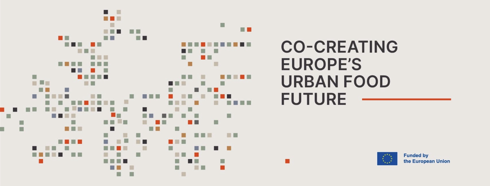

ΝΕΑ ΦΙΛΑΔΕΛΦΕΙΑ · ΝΕΑ ΧΑΛΚΗΔΟΝΑ
Καλλιεργούμε
στην πόλη.
Σχεδιάζουμε
μαζί.
Η τροφή μάς φέρνει κοντά. Γίνε μέρος του UrbanFood και βοήθησε να διαμορφώσουμε τις δράσεις αστικής καλλιέργειας στην πόλη μας.
Θέλω να συμμετάσχωΤΟ ΕΠΟΜΕΝΟ ΒΗΜΑ
Οι ιδέες σου έχουν θέση
από την αρχή.
Συγκεντρώνουμε ενδιαφέρον και προτάσεις για ενημέρωση και συνδιαμόρφωση. Οι χώροι και οι τελικές εγκαταστάσεις θα καθοριστούν μετά την τεχνική αξιολόγηση.
Ένα τοπικό Ζωντανό Εργαστήριο για την καλλιέργεια, τη μάθηση και τη συνεργασία.
Θέλω να συμμετάσχω
στο UrbanFood
Μια ιδέα, μια εμπειρία, μια διάθεση για συνεργασία. Από εδώ ξεκινά η συμμετοχή σου.
Η ΠΡΟΣΚΛΗΣΗ ΑΠΕΥΘΥΝΕΤΑΙ ΣΕ
- Σχολεία
- Συλλόγους Γονέων & Κηδεμόνων
- Πολιτιστικούς συλλόγους
- ΚΑΠΗ
- ΑΜΚΕ & κοινωνικούς φορείς
- Κατοίκους
Συμπλήρωσε την ιδιότητά σου, τι σε ενδιαφέρει και πώς μπορούμε να επικοινωνήσουμε μαζί σου.
Ανοίγω τη φόρμα συμμετοχήςΗ φόρμα ανοίγει σε νέα καρτέλα στο Google Forms. Δεν απαιτείται λογαριασμός Google.
Η δήλωση ενδιαφέροντος αφορά ενημέρωση και συνδιαμόρφωση. Δεν αποτελεί οριστική εγγραφή σε δράση ή δέσμευση διάθεσης χώρου.

ΤΟ URBANFOOD ΣΤΗΝ ΠΟΛΗ ΜΑΣ
Η καλλιέργεια γίνεται
υπόθεση όλων.
Το UrbanFood είναι ένα ευρωπαϊκό ερευνητικό έργο για την παραγωγή τροφής μέσα στην πόλη. Ο Δήμος Νέας Φιλαδέλφειας – Νέας Χαλκηδόνας συμμετέχει με τον σχεδιασμό ενός τοπικού Ζωντανού Εργαστηρίου.
Σχολεία, Σύλλογοι Γονέων, πολιτιστικοί σύλλογοι, ΚΑΠΗ, ΑΜΚΕ και κάτοικοι μπορούν να συμβάλουν με ιδέες, εμπειρίες και προτάσεις για τις δράσεις του.
ΜΕΤΑ ΤΗ ΔΗΛΩΣΗ ΣΟΥ
Από το ενδιαφέρον στη συνεργασία.
- 01
Καταγράφεται η πρότασή σου
Η δήλωσή σου συγκεντρώνεται μαζί με τα ενδιαφέροντα των υπόλοιπων συμμετεχόντων.
- 02
Γίνεται επικοινωνία
Η ομάδα του έργου μπορεί να επικοινωνήσει μαζί σου για να συζητήσει την ιδέα και τη συμμετοχή σου.
- 03
Σχεδιάζουμε τις δράσεις
Οι προτάσεις συμβάλλουν στη διαμόρφωση των συναντήσεων και των επόμενων δραστηριοτήτων.
Πριν δηλώσεις ενδιαφέρον
Πρέπει να εκπροσωπώ κάποιον φορέα;
Όχι. Μπορείς να επιλέξεις «Κάτοικος» και να δηλώσεις ατομικά το ενδιαφέρον σου. Δεν απαιτείται προηγούμενη εμπειρία στην καλλιέργεια.
Έχουν οριστικοποιηθεί οι χώροι και οι ημερομηνίες;
Η παρούσα πρόσκληση αφορά ενημέρωση και συνδιαμόρφωση. Οι τελικοί χώροι εξαρτώνται από τεχνική και, όπου απαιτείται, στατική αξιολόγηση. Οι ημερομηνίες των δράσεων θα γνωστοποιηθούν όταν οριστικοποιηθούν.
Πώς δηλώνει ενδιαφέρον ένα σχολείο ή μια ΑΜΚΕ;
Ένας ενήλικος εκπρόσωπος συμπληρώνει τα δικά του στοιχεία επικοινωνίας και το όνομα του φορέα. Δεν χρειάζονται ονόματα μαθητών, ωφελούμενων ή πληροφορίες υγείας.
Πώς χρησιμοποιούνται τα στοιχεία μου;
Συλλέγονται η ιδιότητα, το όνομα φορέα όπου υπάρχει, το ονοματεπώνυμο και το email επικοινωνίας, το ενδιαφέρον σου και όσα προαιρετικά επιλέξεις να συμπληρώσεις. Σκοπός είναι η διαχείριση της δήλωσής σου και η σχετική επικοινωνία για το UrbanFood.
Οι δηλώσεις υποβάλλονται στο Google Forms και συγκεντρώνονται σε ιδιωτικό πίνακα Google Sheets. Πρόσβαση έχει ο διαχειριστής της φόρμας και όποιοι εξουσιοδοτηθούν για τη διαχείριση των δηλώσεων. Δεν εμφανίζονται δημόσια. Η σελίδα δεν χρησιμοποιεί διαφημιστικά εργαλεία ή εργαλεία ανάλυσης επισκεψιμότητας.
Για ερωτήματα ή αίτημα σχετικά με τα στοιχεία σου, χρησιμοποίησε την επιλογή «Κάτοχος φόρμας επικοινωνίας» στο κάτω μέρος της φόρμας Google, με αναφορά στη δήλωσή σου για το UrbanFood.